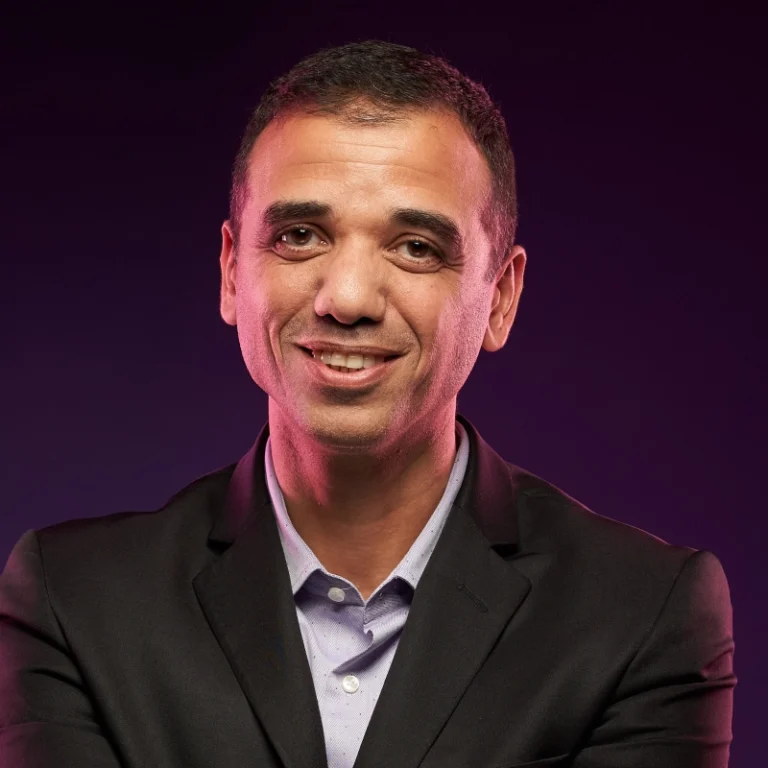
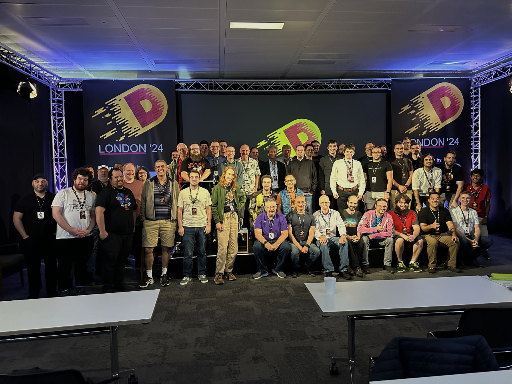

August 19–22, 2025
Symmetry Investments and the D Language Foundation invite you to join us August 19–22 in London for the D Programming Language Conference 2025. We’re happy to be working once more with our friends at Brightspace Events and CodeNode to bring you another four days of fun, insightful conversations, and educational talks.
Can't be there in person? No problem! Join our livestreams during the three days of talks and ask questions of the speakers at any time during each session.
Since 2013, DConf has been the annual event bringing together D programming language enthusiasts and experts from across the globe for the rare opportunity to mingle offline in the real world. We enjoy interacting with each other online, but there's no substitute for the chance to share ideas face-to-face between conference talks, over dinner, or in a local pub.
Whether you’re a seasoned DConf veteran or joining us for the first time, we can’t wait to welcome you to London!
Keynote Speakers

Walter Bright
Creator and Co-maintainer of the D Programming Language

Shimon Ben-David
Chief Technology Officer at Weka

Átila Neves
Co-maintainer of the D Programming Language

IMPORTANT: As of January 8, 2025, visitors to the UK from visa-exempt, non-European countries must apply for an Electronic Travel Authorization (ETA). This is required to enter the country. The application costs £10. A web search will result in several sites offering application services, but please do not use them. They will charge you an additional fee. Please visit the UK government's ETA Guidance page for instructions on how to apply